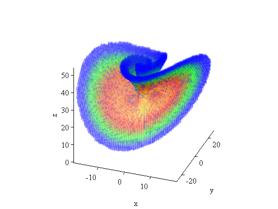

GAIO demo: Invariant measure in the Lorenz system
s = 10; rh = 28; b = 0.4; % the Lorenz system v = @(x) [s*(x(:,2)-x(:,1)) ... rh*x(:,1)-x(:,2)-x(:,1).*x(:,3) ... x(:,1).*x(:,2)-b*x(:,3)]; h = 0.01; n = 10; f = @(x) rk4(v,x,h,n); % f is the flow
Preparations
choose sample points, construct box tree
n = 7; x = linspace(-1,1,n)'; [XX,YY,ZZ] = meshgrid(x,x,x); X = [ XX(:) YY(:) ZZ(:) ]; % $7^3$ sample points c = [0.1 0.1 27]; r = [30 30 40]; t = Tree(c,r); % the box collection
Computation of the global unstable manifold
a = sqrt(b*(rh-1)); x0 = [a a rh-1;-a -a rh-1]; % equilibria depth = 21; t.insert(x0', depth); % construct [x0] gum(t, f, X, depth); % compute global unstable manifold
step 1: 2 of 2 boxes, 0.0 sec step 2: 12 of 12 boxes, 0.0 sec step 3: 29 of 29 boxes, 0.0 sec step 4: 51 of 51 boxes, 0.0 sec step 5: 84 of 84 boxes, 0.1 sec step 6: 107 of 107 boxes, 0.2 sec step 7: 125 of 125 boxes, 0.2 sec step 8: 166 of 166 boxes, 0.3 sec step 9: 176 of 176 boxes, 0.4 sec step 10: 216 of 216 boxes, 0.6 sec step 11: 249 of 249 boxes, 0.7 sec step 12: 287 of 287 boxes, 0.8 sec step 13: 338 of 338 boxes, 1.0 sec step 14: 385 of 385 boxes, 1.3 sec step 15: 400 of 400 boxes, 1.5 sec step 16: 456 of 456 boxes, 1.7 sec step 17: 446 of 446 boxes, 1.9 sec step 18: 491 of 491 boxes, 2.2 sec step 19: 543 of 543 boxes, 2.5 sec step 20: 661 of 661 boxes, 2.8 sec step 21: 738 of 738 boxes, 3.2 sec step 22: 831 of 831 boxes, 3.6 sec step 23: 870 of 870 boxes, 4.0 sec step 24: 852 of 852 boxes, 4.5 sec step 25: 794 of 794 boxes, 4.9 sec step 26: 797 of 797 boxes, 5.3 sec step 27: 797 of 797 boxes, 5.7 sec step 28: 801 of 801 boxes, 6.1 sec step 29: 835 of 835 boxes, 6.5 sec step 30: 866 of 866 boxes, 7.0 sec step 31: 882 of 882 boxes, 7.4 sec step 32: 942 of 942 boxes, 7.9 sec step 33: 971 of 971 boxes, 8.5 sec step 34: 981 of 981 boxes, 9.0 sec step 35: 1002 of 1002 boxes, 9.6 sec step 36: 1050 of 1050 boxes, 10.1 sec step 37: 1065 of 1065 boxes, 10.7 sec step 38: 1104 of 1104 boxes, 11.3 sec step 39: 1128 of 1128 boxes, 11.9 sec step 40: 1184 of 1184 boxes, 12.5 sec step 41: 1211 of 1211 boxes, 13.1 sec step 42: 1186 of 1186 boxes, 13.8 sec step 43: 1204 of 1204 boxes, 14.4 sec step 44: 1198 of 1198 boxes, 15.1 sec step 45: 1208 of 1208 boxes, 15.8 sec step 46: 1155 of 1155 boxes, 16.5 sec step 47: 992 of 992 boxes, 17.0 sec step 48: 681 of 681 boxes, 17.5 sec step 49: 393 of 393 boxes, 17.8 sec step 50: 217 of 217 boxes, 17.9 sec step 51: 101 of 101 boxes, 18.0 sec step 52: 43 of 43 boxes, 18.0 sec step 53: 17 of 17 boxes, 18.0 sec
Computation of the invariant measure
X = 2*rand(100,3)-1; % points for Monte Carlo quadrature P = tpmatrix(t, f, X, depth); % transition matrix [w,lambda] = eigs(P,1,'lm'); % compute eigenvector at eigenvalue 1 wp = log10(max(abs(w(:,1)),1e-16)); % plot measure logarithmically
33320 of 33320 boxes, 5.5 sec
Visualization
boxplot3(t,'depth',depth,'density', wp ,'alpha',0.1); load lorenz_cmap; colormap(cmap); % special colormap view(20,30); axis square; axis tight; xlabel('x'); ylabel('y'); zlabel('z');
Cleanup
delete(t);